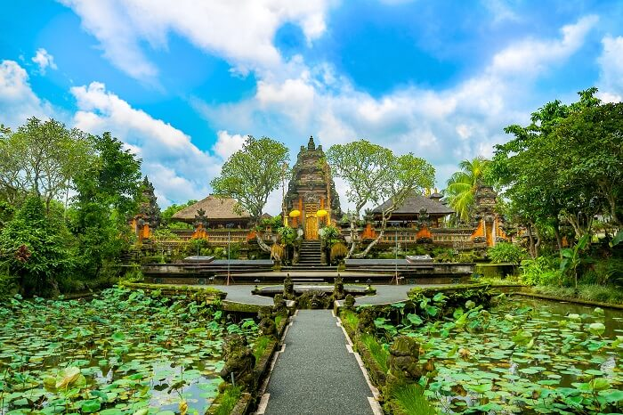

Bali este în Asia de Sud-Est – dar, uneori, această insulă indoneziană se simte ca o altă lume cu totul. Puteți fi duși cu autobuzul direct de la aeroport la hotelul dvs. de ultra-modern din Kuta … apoi cruce întinderi largă de domenii de orez pentru a vizita galeriile de artă de la Ubud, sau înălțimile clifftop ametitoare ale Pura Luhur Uluwatu.
Într-o țară majoritar musulmană, Bali este hindus cultural, cu tradiții și festivități sărbătorit nicăieri altundeva în regiune. Cultura este cel mai bine apreciată prin arte și produsele alimentare pe care localnicii împărtășesc dragoste cu vizitatorii lor; dar această cultură se află într-un armistițiu cu encroaching modernitate în formă de stațiuni, terenuri de golf, și mall-uri germinare peste tot.
Pur și simplu pune, nu există nici un „pur și simplu pune“. Bali sfidează explicația, contrastele sale concurează între ele pentru atenția vizitatorului. Bali este fragmentul numai supraviețuitor al unui imperiu hindus o dată puternic; dar comerțul turistic amenință să subsumeze aceeași cultură bogată celebrează. plajele din Bali și alte minuni naturale sunt în concurență acerbă cu dezvoltarea constantă merge pe întreaga insulă.
Aici puteti vedea insula
Ce se poate face în Bali, Indonezia

Bali a fost mult timp cunoscut pentru plajele și cultura sa, dar infrastructura turistică în creștere înseamnă că noi oportunități de distracție și de divertisment se deschid larg.
Plajele din Bali sunt încă principala remiză. Se poate argumenta că cea mai bună plajă este în Nusa Dua, cu întinderi largă de țărm de nisip moale. Condițiile pestriț pentru surfing în Bali atrag, de asemenea, surferi din întreaga lume.
Muzică și dans balinez joacă un rol important în societatea locală (Pura Luhur Uluwatu lui Kecak și dans foc spectacol este un bun eșantion), iar turiștii sunt încurajați să vadă cultul balinez la multe temple împrăștiate în jurul insulei.
Dar asta e doar zgâriat suprafața. O mai completă run-down poate fi citit aici: Lucruri de făcut în Bali
Regiunile din Bali

Descoperirea atracții Bali poate fi o experiență derutant pentru prima dată vizitator. Un minut puteți fi în mijlocul tumultul Kuta și Denpasar, următorul ar putea fi întâlni delfini pe plaja Lovina. Galeriile de artă din Ubud se pot da drumul la techno muzica in Seminyak.
Sud Bali este în cazul în care are cea mai mare acțiune insulei loc, în cazul în care infrastructura turistică este cea mai dezvoltata: plaje cu nisip alb Kuta și viața de noapte raucuous, atracții urbane Denpasar, iar Nusa Dua ordonat seninătate, printre altele. Pentru mai multe detalii, citiți Introducere în South Bali.
Central Bali este cunoscut ca leagănul artei balineze. Artizani insulei, bazate în principal în orașul Ubud, produc atât opere de artă tradiționale și moderne pentru o piață internațională în creștere. Pentru mai multe detalii, citiți Introducere în Central Bali.
East Bali este dominat de Gunung Agung ( „Muntele Sfânt“), un punct central al religiei și culturii Bali. Besakih Templul Pura este situat la poalele Munților sale. De-a lungul mării, nisipurile vulcanice întunecate oferă oportunități excelente de scufundări, plajă și facilități de snorkeling.
Nordul acestei regiuni, satele Kintamani lui înconjoară Muntele Batur și lacul său calderă – vizita pentru produsele alimentare proaspete, drumeții, și punctul de vedere incomparabil.
North Bali – Centrat în jurul capitalei olandeze vechi de Singaraja, North Bali oferă o privire la istoria pitoresc Bali. Aceasta zona este mult mai puțin aglomerat decât sfârșitul de sud Bali, și oferă unele diversiuni încântătoare proprii. Puteți înota pentru a întâlni delfini pe plaja Lovina, sau să se bucure de arhitectura coloniala în Singaraja.
West Bali – cea mai vestică parte din Bali este prima parte a insulei văzută de pasageri feribot coborau la Gilimanluk; în afară de asta, nu e nimic mult pentru turistul pentru a vedea aici. Unele atractii de pe calea bătut există – mormântul iubitului sortit Jayaprana pot fi găsite aici, precum și animalele sălbatice de la Bali Barat National Park.
Zboruri către Bali
Daca esti ca majoritatea vizitatorilor la Bali, o veți vedea mai întâi dintr-un avion atingând în jos, la aeroportul internațional Ngurah Rai (IATA: DPS). Ngurah Rai este accesibil de la aproape fiecare nod important în regiune, Australia a inclus.
Din SUA – zborurile pe distanțe lungi din SUA continent Bali sunt disponibile, cu plecare de la Los Angeles, San Francisco, și New York.
De la Hong Kong – Cathay Pacific, China Airlines, Garuda Indonesia, Japan Airlines, Korean Air Lines, Malaysia Airlines, Singapore Airlines și zboară de la Aeroportul Internațional din Hong Kong (IATA: HKG) Ngurah Rai.
Din Singapore – Garuda Indonesia, Malaysia Airlines, Singapore Airlines și zboară de la aeroportul din Singapore Changi International (IATA: SIN) Ngurah Rai.
vizitatori internaționale de ieșire sunt supuse unei taxe de aeroport de 150.000 rupie, de plătit numai în moneda locală. Pentru vizitatorii care lasă pe zborurile interne, costurile de taxa de plecare interne Rp30,000.
Costuri zbor
| Companie |
Contact |
Pret estimativ |
| Lufthansa |
Maria Anders |
1000$/pers |
| Ryanair |
Francisco Chang |
800$/pers |
| Wizzair |
Roland Mendel |
800$/pers |
| Delta airlines |
Helen Bennett |
900$/pers |
| Air France |
Yoshi Tannamuri |
1000$/pers |
| United Airlines |
Giovanni Rovelli |
900$/pers |
Noțiuni de bază În jurul Bali
Multe stațiuni oferă transferuri gratuite de la Ngurah Rai, dar pe șansa subțire care nu se poate obține una (sau nu doriți ca una), puteți merge cu ușurință un taxi de la aeroport la hotel sau în altă parte în insulă. taxiuri pot fi găsite în capătul sudic al Bali, în special în jurul valorii de zonele turistice din Kuta, Tuban, și Denpasar. Mai multe despre Bali taxiuri aici: Cum să plimbare un taxi în Bali, Indonezia.
Dacă vrei să mergi mai departe, puteți închiria o mașină (cu sau fara sofer) sau o motocicletă – dar, dacă alegeți să vă conduce, consideră că Bali este un loc incredibil de provocator pentru a conduce. Citiți pe toate opțiunile de transport aici: Transport în Bali – Introducere.
Hoteluri și Resorts în Bali
Bali oferă o gamă incredibilă de opțiuni de cazare – de la pensiuni-murdărie ieftine la vile de mii de dolari ședere. În general, călătorii cu buget tind să rămână în sau în jurul Kuta, bun mid-range și opțiuni de familie pot fi avut în Tuban, iar cele mai scumpe stațiuni sunt în mare parte în Nusa Dua. Puteți găsi mai multe Bali de cazare în această listă de ponturi Hotel Bali.
X-factor fundation 2019 inc.®